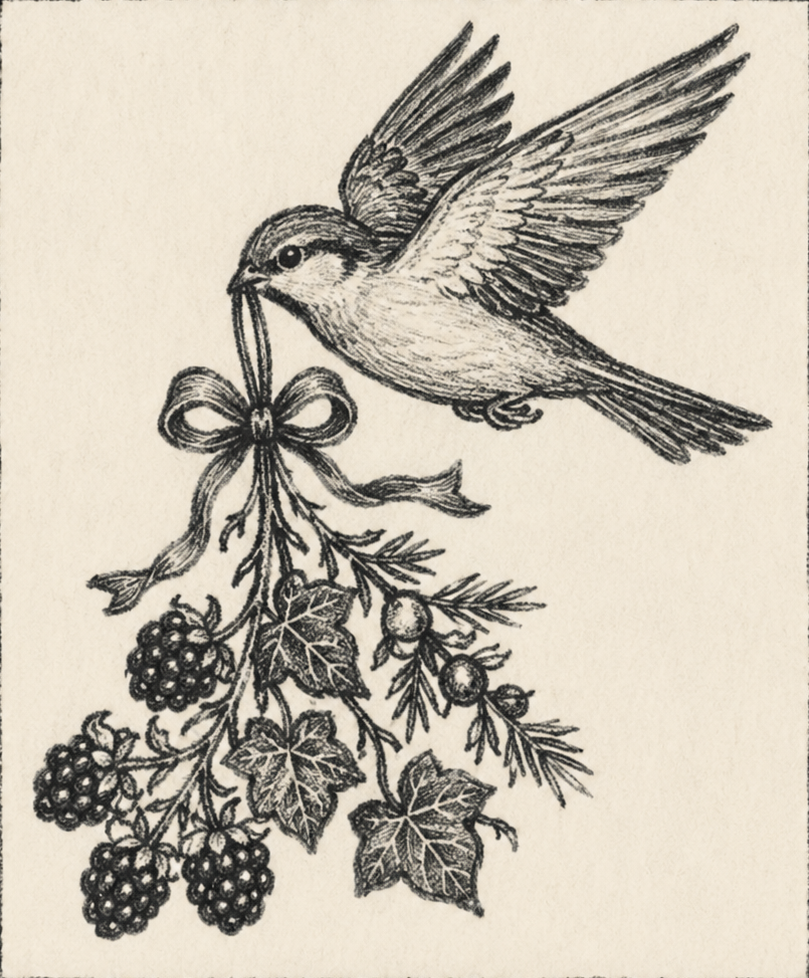

I write folkloric fiction & share personal essays inspired by my home in the Shenandoah Valley.

I write small stories centered on relationships, grounded in plot, and rooted in the holiness of ordinary days.
A folktale quest about an eldest daughter who will cross a kingdom to save her sisters, their hidden farm, and the truth her father disappeared to hide.
Folkloric fiction and essays on faith, land, and the sacramental ordinary — delivered every other week.
Read on Substack →A catalogue of the seasonal, from-scratch recipes from the letters — the food that shows up in the stories.
Browse recipes →The visual world behind the work — landscapes, still lifes, and the mood of the Blue Ridge.
Follow along →New letters every other week — essays, recipes, gardening, and handcrafts that speak to a slow, small life filled with meaning.
Subscribe on Substack →